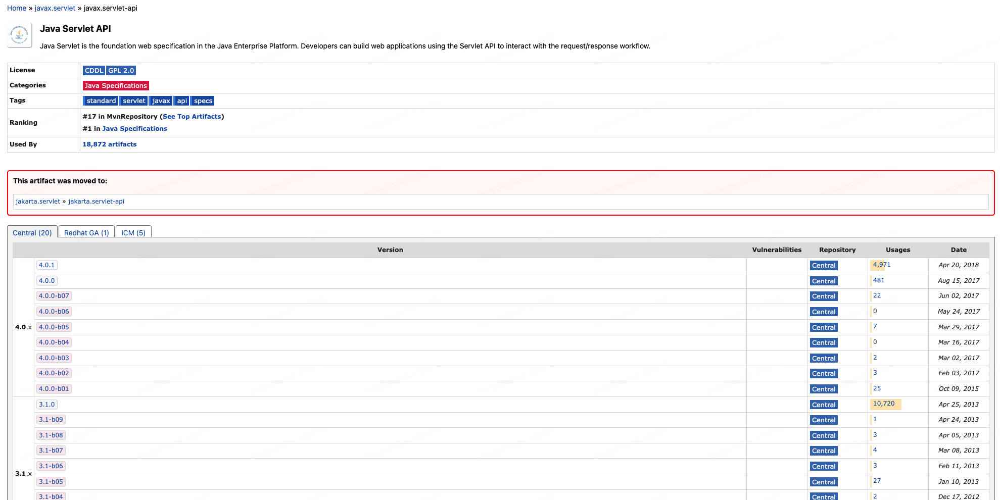
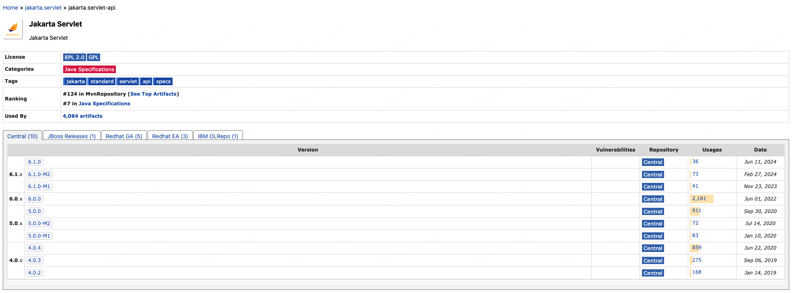
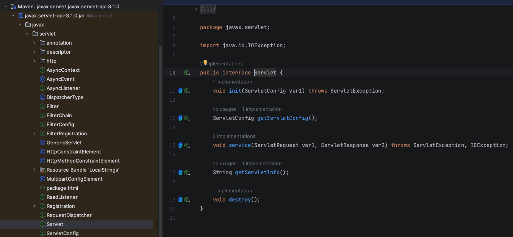
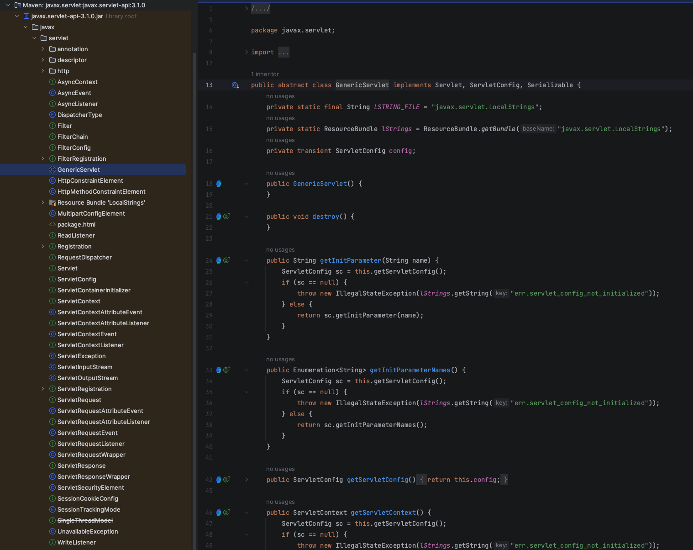
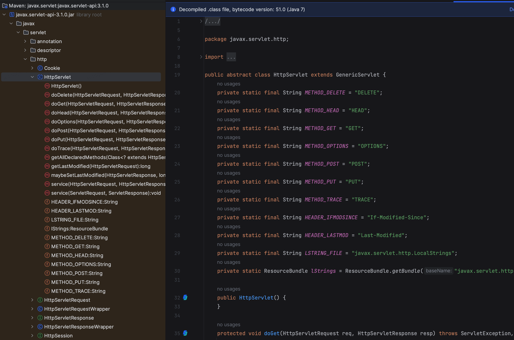
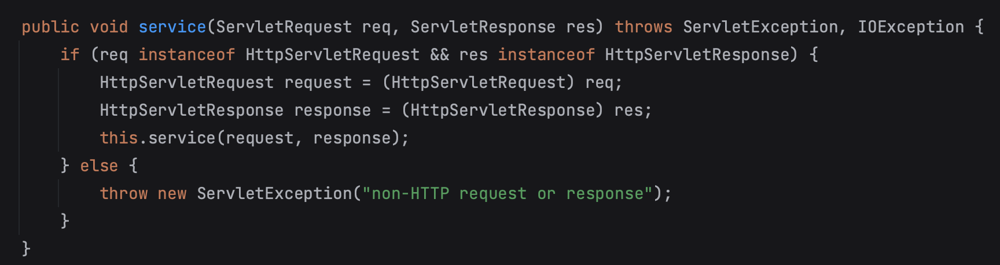
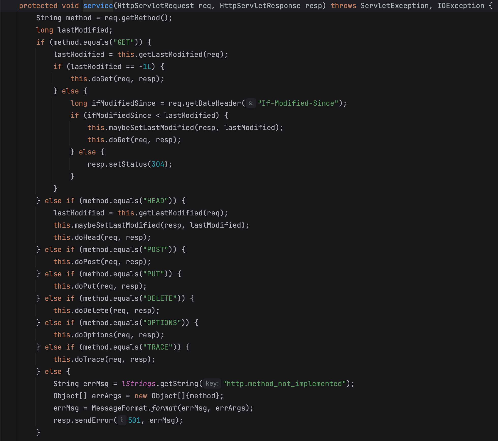
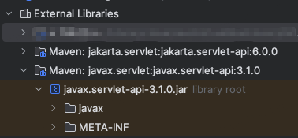

JavaWeb开发基础ServletAPI¶

JavaWeb开发基础Servlet API¶
Servlet版本¶
Oracle将Java EE（Java SE还自己保留）交给开源组织，Eclipse基金会接手。但Oracle不允许开源组织使用Java名号，所以Jakarta EE名称于2018.02.26应运而生。
正是因为组织变化，Servlet被割裂为了2个版本，javax.servlet和jakarta.servlet。
javax.servlet已经停止维护，但它仍然是一个非常有用和重要的技术，特别是在许多现有项目中，学习和使用它将为你提供坚实的Web开发基础。

<dependency>
<groupId>javax.servlet</groupId>
<artifactId>javax.servlet-api</artifactId>
<version>3.1.0</version>
<scope>provided</scope>
</dependency>
如果希望使用Jakarta EE 9或更高版本的Servlet
API，则需要切换到javax.servlet。

<dependency>
<groupId>jakarta.servlet</groupId>
<artifactId>jakarta.servlet-api</artifactId>
<version>6.0.0</version>
<scope>provided</scope>
</dependency>
本文将基于javax.servlet来介绍Servlet，从Usages来看，它仍然是使用最广泛的。
Servlet API¶
Servlet API主要有2个包，javax.servlet包含了servlet和web
container使用的接口和类。javax.servlet.http包含了http相关的接口和类。
javax.servlet接口列表：
Servlet
ServletRequest
ServletResponse
RequestDispatcher
ServletConfig
ServletContext
SingleThreadModel
Filter
FilterConfig
FilterChain
ServletRequestListener
ServletRequestAttributeListener
ServletContextListener
ServletContextAttributeListener
javax.servlet类列表：
GenericServlet
ServletInputStream
ServletOutputStream
ServletRequestWrapper
ServletResponseWrapper
ServletRequestEvent
ServletContextEvent
ServletRequestAttributeEvent
ServletContextAttributeEvent
ServletException
UnavailableException
javax.servlet.http接口列表：
HttpServletRequest
HttpServletResponse
HttpSession
HttpSessionListener
HttpSessionAttributeListener
HttpSessionBindingListener
HttpSessionActivationListener
HttpSessionContext (deprecated now)
javax.servlet.http类列表：
HttpServlet
Cookie
HttpServletRequestWrapper
HttpServletResponseWrapper
HttpSessionEvent
HttpSessionBindingEvent
HttpUtils (deprecated now)
Servlet接口¶

Servlet Interface定义了所有servlet必须具有的行为。主要方法如下：
public void init(ServletConfig config) 初始化，只会被web container调用1次
public void service(ServletRequest request, ServletResponse response) 接收请求，返回响应，每次请求都会调用1次
public void destroy() 销毁，只会被web container调用1次
public ServletConfig getServletConfig() Servlet配置
public String getServletInfo() Servlet信息
以下是代码示例：
import java.io.*;
import javax.servlet.*;
public class First implements Servlet {
ServletConfig config = null;
/**
* 初始化
* @param config
*/
public void init(ServletConfig config) {
this.config = config;
System.out.println("servlet is initialized");
}
/**
* 服务
* @param req
* @param res
* @throws IOException
* @throws ServletException
*/
public void service(ServletRequest req, ServletResponse res)
throws IOException, ServletException {
res.setContentType("text/html");
PrintWriter out = res.getWriter();
out.print("<html><body>");
out.print("<b>hello simple servlet</b>");
out.print("</body></html>");
}
/**
* 销毁
*/
public void destroy() {
System.out.println("servlet is destroyed");
}
/**
* 配置
* @return
*/
public ServletConfig getServletConfig() {
return config;
}
/**
* 信息
* @return
*/
public String getServletInfo() {
return "copyright 2007-1010";
}
}
GenericServlet类¶

GenericServlet是个抽象类，实现了Servlet, ServletConfig, Serializable接口，能处理任何请求，支持任何协议。主要方法如下：
public void init(ServletConfig config) 初始化
public abstract void service(ServletRequest request, ServletResponse response) 接收请求，返回响应，每次请求都会调用1次
public void destroy() 销毁，只会被web container调用1次
public ServletConfig getServletConfig() Servlet配置
public String getServletInfo() Servlet信息
public void init() 无参初始化
public ServletContext getServletContext() Servlet上下文
public String getInitParameter(String name) 根据参数name返回value
public Enumeration getInitParameterNames() web.xml所有参数
public String getServletName() Servlet名称
public void log(String msg) 记录Servlet日志
public void log(String msg,Throwable t) 记录Servlet日志和异常堆栈
以下是代码示例：
import javax.servlet.GenericServlet;
import javax.servlet.ServletException;
import javax.servlet.ServletRequest;
import javax.servlet.ServletResponse;
import java.io.IOException;
import java.io.PrintWriter;
public class First extends GenericServlet {
public void service(ServletRequest req, ServletResponse res)
throws IOException, ServletException {
res.setContentType("text/html");
PrintWriter out = res.getWriter();
out.print("<html><body>");
out.print("<b>hello generic servlet</b>");
out.print("</body></html>");
}
}
HttpServlet类¶

HttpServlet继承了GenericServlet抽象类。主要方法如下：
public void service(ServletRequest req,ServletResponse res) dispatches the request to the protected service method by converting the request and response object into http type.（这里结合英文解释比较清楚，转换类型后，调用第2个service）

protected void service(HttpServletRequest req, HttpServletResponse res) receives the request from the service method, and dispatches the request to the doXXX() method depending on the incoming http request type.（这里结合英文解释比较清楚，根据不同method，调用doXXX()方法）

protected void doGet(HttpServletRequest req, HttpServletResponse res) 处理GET请求，web container调用
protected void doPost(HttpServletRequest req, HttpServletResponse res) 处理POST请求，web container调用
protected void doHead(HttpServletRequest req, HttpServletResponse res) 处理HEAD请求，web container调用
protected void doOptions(HttpServletRequest req, HttpServletResponse res) 处理OPTIONS请求，web container调用
protected void doPut(HttpServletRequest req, HttpServletResponse res) 处理PUT请求，web container调用
protected void doTrace(HttpServletRequest req, HttpServletResponse res) 处理TRACE请求，web container调用
protected void doDelete(HttpServletRequest req, HttpServletResponse res) 处理DELETE请求，web container调用
protected long getLastModified(HttpServletRequest req) 上次修改时间
如果想深入学习Servlet API，可以在Maven pom.xml引入servlet包依赖，External Libraries查看源码。
